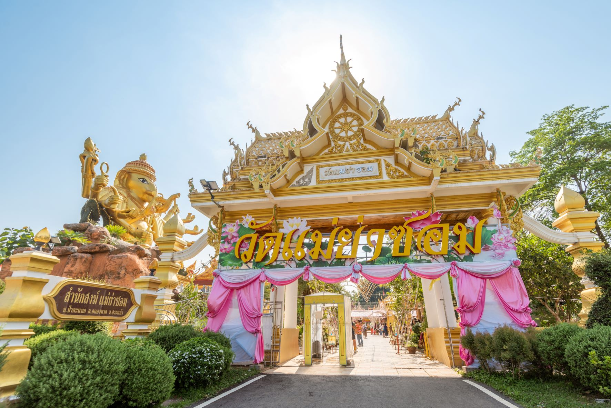

กลับสู่หน้าหลัก
วัดแม่ย่าซอม
จังหวัดสระแก้ว

ประวัติและข้อมูลสำคัญ
วัดแม่ย่าซอมเป็นวัดที่มีความสำคัญทั้งในด้านศาสนาและวัฒนธรรมของชุมชนในพื้นที่
วัดนี้เป็นสถานที่ที่ชาวบ้านมักมาทำบุญและประกอบพิธีกรรมทางศาสนา
ภายในวัดมีสิ่งศักดิ์สิทธิ์หลายอย่าง เช่น พระพุทธรูปและพระเครื่องต่างๆ ที่ชาวบ้านให้ความเคารพนับถือ
การเดินทาง
การเดินทางจากตัวเมืองสระแก้วไปวัดแม่ย่าซอมโดยรถยนต์ส่วนตัว: เริ่มต้นจากตัวเมืองสระแก้ว ใช้ถนนทางหลวงหมายเลข 317 มุ่งหน้าไปทางอำเภอคลองหาด ขับต่อไปประมาณ 20 กิโลเมตร เมื่อถึงตำบลคลองหาด จะมีป้ายบอกทางเข้าวัดแม่ย่าซอม ให้เลี้ยวตามป้ายเข้าสู่ถนนท้องถิ่น ขับต่อไปอีกประมาณ 2 กิโลเมตร จะถึงวัดแม่ย่าซอม
เปิดใน Google Maps